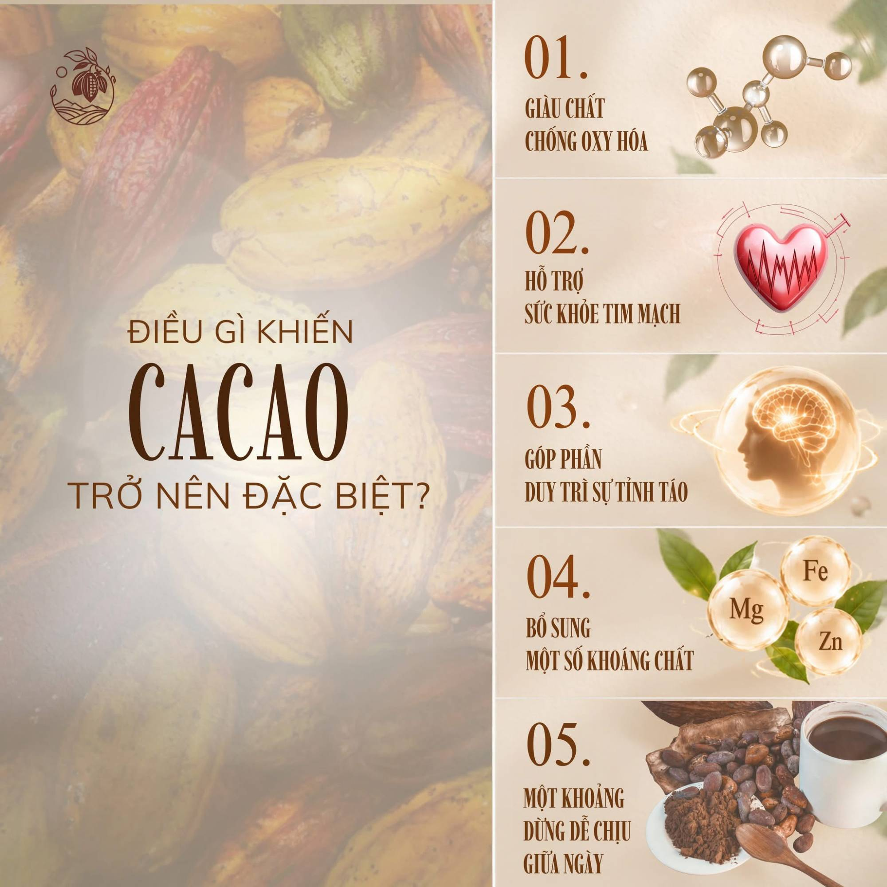
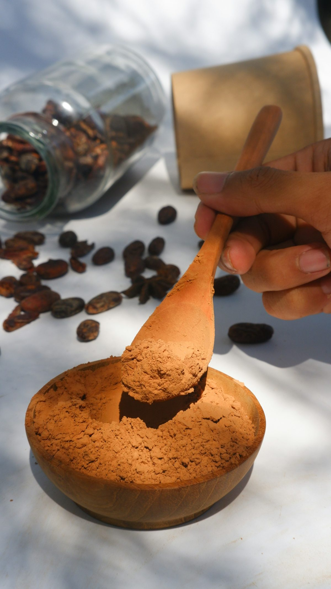

Blog
Muôn cách thưởng thức
Công thức pha, sự kiện và những điều bạn hay hỏi.
Công thức pha
Pha tại nhà

Kiến thức
Điều gì khiến cacao trở nên đặc biệt?
Năm lý do để một tách cacao nguyên bản có mặt trong ngày của bạn.
Bột cacao nguyên chất
Workshop
Hành Trình Một Vị
5 chương theo mùa, tối đa 30 chỗ mỗi buổi. Cùng đi từ hạt cacao đến tách cacao trên tay.
- Chương 1
- Chương 2
- Chương 3
- Chương 4
- Chương 5
Tên từng chương và lịch tổ chức: CẬP NHẬT.
Đăng ký quan tâm
Hỏi đáp